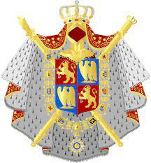
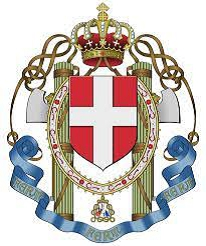

1575257970758 Kejsare Louis II of Italy
Tysk-Romersk kejsare, Kung av Italien. Blev högst 50 år.
Far:
Mor:
Född:
825 Metz, Moselle, Lorraine, France. [1]
Död:
875-08-12 Brescia, Lombardiet, Italy. [1]
Barn med 1575257970759 Kejsarinnan Engelberga of Spoleto (826 - 897)
Barn:
Personhistoria
Årtal
Ålder
Händelse
825
Födelse 825 Metz, Moselle, Lorraine, France [1]
826
Partnern 1575257970759 Kejsarinnan Engelberga of Spoleto föds 826 Spoleto, Perugia, Italy [1]
843
Dottern 787628985379 Queen Ermengard of Italy föds 843 Pavia, Lombardiet, Italy [1]
851
Modern 3150515941517 Kejsarinnan Ermengarde de Tours dör 851-03-20 Erstein, Bas Rhin, Alsace, France [1]
855
Fadern 3150515941516 Kejsare Lothaire I of Franken dör 855-09-29 Prum, Rheinland-Pfalz, Germany [1]
873?
Barnbarnet 393814492689 Princess Kunnigunde of Provence föds omkring 873 [2]
875
Död 875-08-12 Brescia, Lombardiet, Italy [1]
Bilder



Källor
[1]
Lindström
[2]
comrade28